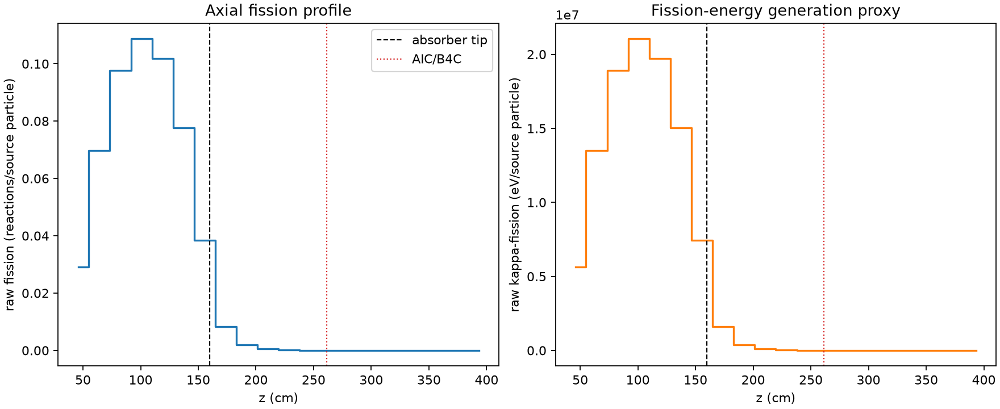
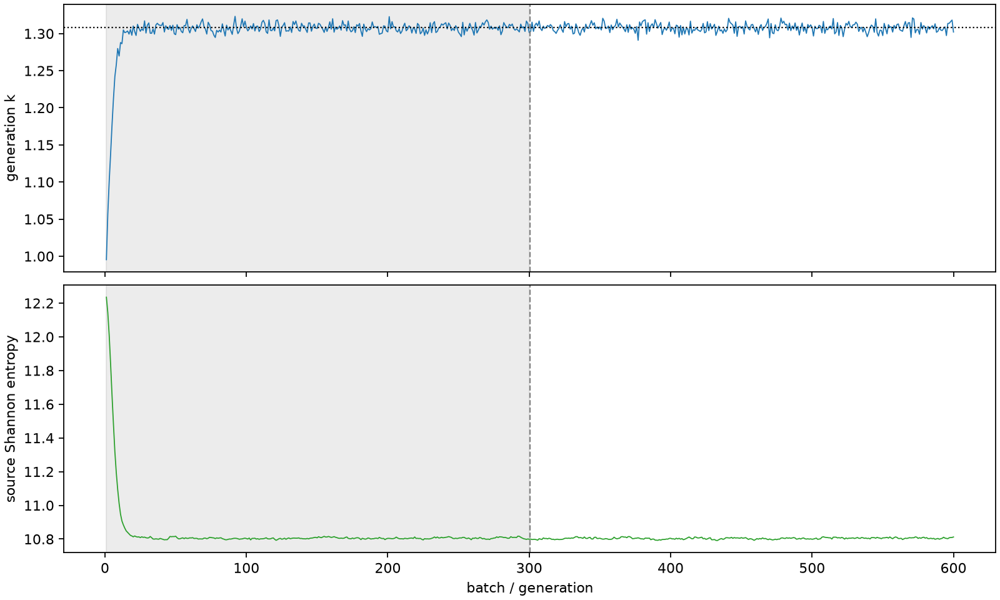

| field | value |
|---|---|
| experiment | V2-STAGE_256_OGRENCI_02-0024 |
| k | 1.307804955341743 |
| MC standard error | 0.00019630044688416132 |
| seconds | 931.3515197240049 |
| acceptance | not_assessed |
| convergence | review_required |
Completed is output integrity only; physical and statistical review required. Zero tallies do not prove zero production or zero uncertainty.
| diagnostic | value |
|---|---|
| geometric fuel voxels | 5280 |
| zero fission tally voxels | 1215 |
| low signal fuel voxels | 2379 |
| low signal fission share | 8.04070908074284e-05 |
| low signal kappa share | 8.043548825499229e-05 |
| important fission share | 0.9502084559683407 |
| previous filter included | 2901 |
| duration estimate s | 1562.5173488400023 |
| actual minus estimate s | -631.1658291159974 |
| fission relative MC error | statistics |
|---|---|
| all_geometric_fuel | {"voxels": 5280, "positive_mean_voxels": 4065, "zero_mean_voxels": 1215, "undefined_relative_error_voxels": 1215, "median": 0.01947385447478302, "p95": 0.9393074179120025, "maximum": 1.0000000000000002} |
| low_signal | {"voxels": 2379, "positive_mean_voxels": 1164, "zero_mean_voxels": 1215, "undefined_relative_error_voxels": 1215, "median": 0.5935662206884502, "p95": 1.0, "maximum": 1.0000000000000002} |
| important_95pct | {"voxels": 1703, "positive_mean_voxels": 1703, "zero_mean_voxels": 0, "undefined_relative_error_voxels": 0, "median": 0.006226187864616856, "p95": 0.009986897122202337, "maximum": 0.011384874739938322} |
| outside_previous_filter | {"voxels": 2379, "positive_mean_voxels": 1164, "zero_mean_voxels": 1215, "undefined_relative_error_voxels": 1215, "median": 0.5935662206884502, "p95": 1.0, "maximum": 1.0000000000000002} |
| kappa_fission relative MC error | statistics |
|---|---|
| all_geometric_fuel | {"voxels": 5280, "positive_mean_voxels": 4065, "zero_mean_voxels": 1215, "undefined_relative_error_voxels": 1215, "median": 0.01944844416806596, "p95": 0.9393059417321045, "maximum": 1.0000000000000002} |
| low_signal | {"voxels": 2379, "positive_mean_voxels": 1164, "zero_mean_voxels": 1215, "undefined_relative_error_voxels": 1215, "median": 0.592500282797412, "p95": 1.0, "maximum": 1.0000000000000002} |
| important_95pct | {"voxels": 1703, "positive_mean_voxels": 1703, "zero_mean_voxels": 0, "undefined_relative_error_voxels": 0, "median": 0.006219947766574746, "p95": 0.009976701116977339, "maximum": 0.011372857389510707} |
| outside_previous_filter | {"voxels": 2379, "positive_mean_voxels": 1164, "zero_mean_voxels": 1215, "undefined_relative_error_voxels": 1215, "median": 0.592500282797412, "p95": 1.0, "maximum": 1.0000000000000002} |
| axial bin | fission share | kappa-fission share |
|---|---|---|
| 1 | 0.05453371442987732 | 0.05453555662630359 |
| 2 | 0.13058928234533826 | 0.13058764297890293 |
| 3 | 0.18273548704883477 | 0.18273330863168027 |
| 4 | 0.20340250391784312 | 0.2034000611772498 |
| 5 | 0.19069189964598332 | 0.19068953323752033 |
| 6 | 0.14542382520098596 | 0.14542214340470433 |
| 7 | 0.07199353012394685 | 0.07199570101453523 |
| 8 | 0.015486733365328393 | 0.015491387667573492 |
| 9 | 0.003846700090811752 | 0.0038479347920448797 |
| 10 | 0.0009802146160257103 | 0.0009805139820906162 |
| 11 | 0.00023807341995122882 | 0.0002381537553846152 |
| 12 | 5.848059218478601e-05 | 5.849658207684423e-05 |
| 13 | 1.3503754126189505e-05 | 1.351138156534755e-05 |
| 14 | 4.624232148508024e-06 | 4.626194568763342e-06 |
| 15 | 1.1278863828194662e-06 | 1.1289604391981721e-06 |
| 16 | 2.5946032935985305e-07 | 2.5946634623916326e-07 |
| 17 | 3.299203665347956e-08 | 3.3236564122172904e-08 |
| 18 | 6.877864748687349e-09 | 6.910449631286099e-09 |
| 19 | 0.0 | 0.0 |
| 20 | 0.0 | 0.0 |
Histories include the inactive-to-active transition at batch 300. kappa-fission approximates fission energy production, not total heat deposition.

